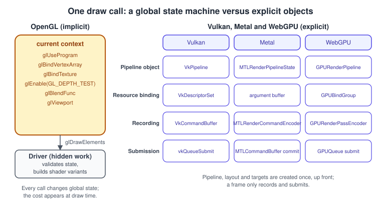
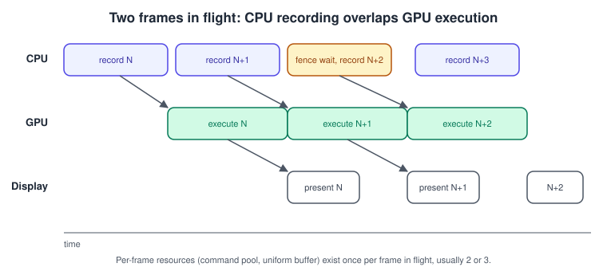
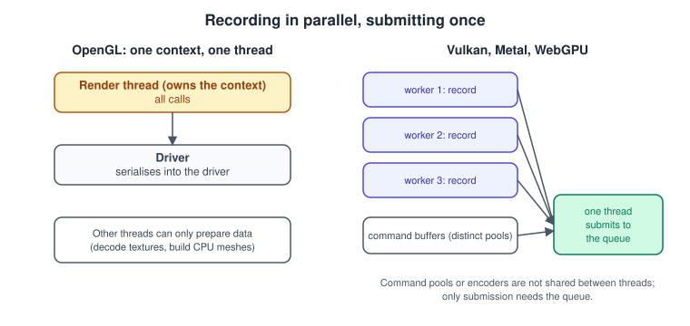

Explicit vs Implicit Graphics APIs
|
This content was generated with the assistance of AI and should be verified against the official documentation before being relied on in production. |
The biggest change in graphics programming since programmable shaders is not a new effect but a new contract with the driver. OpenGL lets you change global state one call at a time and trusts the driver to work out what that means. Vulkan, Metal and WebGPU, and Direct3D 12 for context, ask you to describe your work up front in objects and to say what has to happen before what. This page explains both models, why the industry moved, and what exactly you take over (or, in WebGPU, still get for free).
The facts were checked in November 2026. The versions documented are OpenGL 4.6, Vulkan 1.4 (core since December 2024, with the dynamic rendering and synchronization2 features that arrived in 1.3), the Metal API on current Apple operating systems including the Metal 4 command model introduced in 2025, and WebGPU as in the W3C Candidate Recommendation Draft of 2026-09-15. Examples are C for OpenGL and Vulkan, Swift for Metal and JavaScript for WebGPU, drawing the Bookshelf’s textured book box.
Two contracts with the driver
The implicit model: OpenGL
An OpenGL program owns a context, a large block of mutable global state that lives in the driver: which shader program is current, which vertex array object, which texture is bound to each texture unit, whether blending and depth testing are enabled, the viewport, the framebuffer binding, and hundreds of other values. Almost every call changes some part of that state, and a draw call uses whatever the state is at that moment.
Because the application never states its intent as a whole, the driver does a lot of work behind the scenes:
-
Validation at draw time: is the framebuffer complete, are all the used uniform blocks bound, is the texture format compatible with the sampler?
-
Shader variants: the final machine code often depends on state such as the framebuffer format, blend state or vertex layout, so the driver may recompile a shader on the first draw with a new combination. This causes the familiar hitch when a new material appears for the first time.
-
Memory and residency: buffers and textures are opaque handles. The driver chooses where they live, when to copy them, and when to rename (allocate fresh storage for) a buffer you overwrite while the GPU still reads the old data.
-
Hazard tracking: the driver inserts the waits needed so that a draw that reads a texture happens after the render that wrote it.
-
Threading: a context belongs to one thread at a time; the driver may run its own worker threads internally.
This is easy to learn and sufficient for many applications, and it is why OpenGL remained popular for twenty-five years. It also makes cost unpredictable and hard to reduce, because the expensive work is invisible, and the single-threaded API model cannot scale to many cores. OpenGL 4.6 (2017) is the last version; the Khronos Group’s direction moved to Vulkan, and Apple deprecated OpenGL on its platforms in 2018 (macOS 10.14), leaving it at version 4.1 there.
The explicit model: Vulkan, Metal, WebGPU
An explicit API turns each hidden step into an object that you create, configure and hand over:
-
A pipeline state object bundles the shaders and nearly all fixed-function state, so the driver compiles and validates it once, at creation.
-
Resource binding objects (descriptor sets in Vulkan, argument buffers or tables in Metal, bind groups in WebGPU) describe which resources a pipeline reads.
-
Command buffers record work on any thread. Nothing runs until the buffer is submitted to a queue.
-
Synchronisation between commands and between queues is explicit in Vulkan, partly explicit in Metal and automatic in WebGPU.
-
Memory is allocated by you in Vulkan, shaped by storage modes and heaps in Metal, and abstracted by usage flags in WebGPU.
The driver becomes thin, and the cost of each call becomes predictable. The price is code volume: the classic Vulkan "hello triangle" runs to hundreds of lines. WebGPU keeps the object model but adds validation and automatic synchronisation, so it sits between the two worlds.

The same draw in four APIs
The tables and listings show one task: draw the book box with a shader, a vertex buffer, an index buffer and a texture. Creation code (device, swapchain, shaders, buffers) is omitted; the point is what has to exist before the draw and what the draw itself looks like.
OpenGL
Everything is a bind-then-draw sequence on the current context. The order of the calls does not matter much as long as the state is right at the draw.
/* once, at load time */
GLuint program = createProgram(vertexSource, fragmentSource);
GLuint vao = createBookVertexArray(); /* buffers and attribute layout bound to a VAO */
GLuint bookTex = createBookTexture();
GLint mvpLoc = glGetUniformLocation(program, "uMVP");
/* every frame */
glViewport(0, 0, width, height);
glClearColor(0.1f, 0.1f, 0.12f, 1.0f);
glClear(GL_COLOR_BUFFER_BIT | GL_DEPTH_BUFFER_BIT);
glEnable(GL_DEPTH_TEST);
glDepthFunc(GL_LESS);
glEnable(GL_CULL_FACE);
glUseProgram(program);
glUniformMatrix4fv(mvpLoc, 1, GL_FALSE, mvp);
glActiveTexture(GL_TEXTURE0);
glBindTexture(GL_TEXTURE_2D, bookTex);
glBindVertexArray(vao);
glDrawElements(GL_TRIANGLES, indexCount, GL_UNSIGNED_SHORT, 0);Source: OpenGL 4 reference: glDrawElements.
Modern OpenGL narrows the gap with direct state access (4.5), which names the object directly instead of binding it first, and with persistent mapped buffers (4.4), multi-draw indirect (4.3) and bindless textures. These techniques, often called approaching zero driver overhead, reduce the cost of the hidden work but do not make it explicit.
Vulkan
The pipeline, its layout and the descriptor set were created at load time. The frame only records. With dynamic rendering (core since Vulkan 1.3) the render pass and framebuffer objects of Vulkan 1.0 are no longer needed, and with synchronization2 (also 1.3) barriers are expressed with one structure.
VkCommandBufferBeginInfo begin = {
.sType = VK_STRUCTURE_TYPE_COMMAND_BUFFER_BEGIN_INFO,
.flags = VK_COMMAND_BUFFER_USAGE_ONE_TIME_SUBMIT_BIT,
};
vkBeginCommandBuffer(cmd, &begin);
/* swapchain image: undefined -> color attachment */
VkImageMemoryBarrier2 toColor = {
.sType = VK_STRUCTURE_TYPE_IMAGE_MEMORY_BARRIER_2,
.srcStageMask = VK_PIPELINE_STAGE_2_COLOR_ATTACHMENT_OUTPUT_BIT,
.srcAccessMask = 0,
.dstStageMask = VK_PIPELINE_STAGE_2_COLOR_ATTACHMENT_OUTPUT_BIT,
.dstAccessMask = VK_ACCESS_2_COLOR_ATTACHMENT_WRITE_BIT,
.oldLayout = VK_IMAGE_LAYOUT_UNDEFINED,
.newLayout = VK_IMAGE_LAYOUT_COLOR_ATTACHMENT_OPTIMAL,
.image = swapchainImage,
.subresourceRange = { VK_IMAGE_ASPECT_COLOR_BIT, 0, 1, 0, 1 },
};
VkDependencyInfo dep = {
.sType = VK_STRUCTURE_TYPE_DEPENDENCY_INFO,
.imageMemoryBarrierCount = 1,
.pImageMemoryBarriers = &toColor,
};
vkCmdPipelineBarrier2(cmd, &dep);
VkRenderingAttachmentInfo color = {
.sType = VK_STRUCTURE_TYPE_RENDERING_ATTACHMENT_INFO,
.imageView = swapchainView,
.imageLayout = VK_IMAGE_LAYOUT_COLOR_ATTACHMENT_OPTIMAL,
.loadOp = VK_ATTACHMENT_LOAD_OP_CLEAR,
.storeOp = VK_ATTACHMENT_STORE_OP_STORE,
.clearValue = { .color = { { 0.1f, 0.1f, 0.12f, 1.0f } } },
};
VkRenderingInfo rendering = {
.sType = VK_STRUCTURE_TYPE_RENDERING_INFO,
.renderArea = { { 0, 0 }, { width, height } },
.layerCount = 1,
.colorAttachmentCount = 1,
.pColorAttachments = &color,
};
vkCmdBeginRendering(cmd, &rendering);
vkCmdBindPipeline(cmd, VK_PIPELINE_BIND_POINT_GRAPHICS, pipeline);
vkCmdBindDescriptorSets(cmd, VK_PIPELINE_BIND_POINT_GRAPHICS,
pipelineLayout, 0, 1, &bookDescriptorSet, 0, NULL);
VkDeviceSize offset = 0;
vkCmdBindVertexBuffers(cmd, 0, 1, &vertexBuffer, &offset);
vkCmdBindIndexBuffer(cmd, indexBuffer, 0, VK_INDEX_TYPE_UINT16);
VkViewport viewport = { 0.0f, 0.0f, (float)width, (float)height, 0.0f, 1.0f };
VkRect2D scissor = { { 0, 0 }, { width, height } };
vkCmdSetViewport(cmd, 0, 1, &viewport);
vkCmdSetScissor(cmd, 0, 1, &scissor);
vkCmdPushConstants(cmd, pipelineLayout, VK_SHADER_STAGE_VERTEX_BIT,
0, sizeof(mvp), mvp);
vkCmdDrawIndexed(cmd, indexCount, 1, 0, 0, 0);
vkCmdEndRendering(cmd);
/* swapchain image: color attachment -> present */
toColor.srcAccessMask = VK_ACCESS_2_COLOR_ATTACHMENT_WRITE_BIT;
toColor.dstStageMask = VK_PIPELINE_STAGE_2_NONE;
toColor.dstAccessMask = 0;
toColor.oldLayout = VK_IMAGE_LAYOUT_COLOR_ATTACHMENT_OPTIMAL;
toColor.newLayout = VK_IMAGE_LAYOUT_PRESENT_SRC_KHR;
vkCmdPipelineBarrier2(cmd, &dep);
vkEndCommandBuffer(cmd);Metal
A command queue hands out command buffers; each render pass is an encoder. The pipeline state was built from a descriptor at load time. Metal tracks hazards for most resources by default, so there are no barriers in this example. Metal 4 (2025) adds a new command model with explicit command allocators, argument tables and residency sets for apps that want Vulkan-like control; the classic encoder API shown here remains available.
guard let commandBuffer = queue.makeCommandBuffer(),
let descriptor = view.currentRenderPassDescriptor,
let encoder = commandBuffer.makeRenderCommandEncoder(descriptor: descriptor)
else { return }
encoder.setRenderPipelineState(pipelineState)
encoder.setDepthStencilState(depthState)
encoder.setCullMode(.back)
encoder.setVertexBuffer(vertexBuffer, offset: 0, index: 0)
encoder.setVertexBytes(&uniforms, length: MemoryLayout<Uniforms>.stride, index: 1)
encoder.setFragmentTexture(bookTexture, index: 0)
encoder.setFragmentSamplerState(sampler, index: 0)
encoder.drawIndexedPrimitives(type: .triangle,
indexCount: indexCount,
indexType: .uint16,
indexBuffer: indexBuffer,
indexBufferOffset: 0)
encoder.endEncoding()
if let drawable = view.currentDrawable {
commandBuffer.present(drawable)
}
commandBuffer.commit()WebGPU
WebGPU keeps the explicit object model, with pipelines, bind groups and command encoders, but validates every call in the browser and tracks resource usage itself, so you write no barriers. Errors surface through error scopes and the device’s uncaptured-error event rather than crashing the GPU.
const encoder = device.createCommandEncoder();
const pass = encoder.beginRenderPass({
colorAttachments: [{
view: context.getCurrentTexture().createView(),
clearValue: { r: 0.1, g: 0.1, b: 0.12, a: 1 },
loadOp: 'clear',
storeOp: 'store',
}],
depthStencilAttachment: {
view: depthView,
depthClearValue: 1,
depthLoadOp: 'clear',
depthStoreOp: 'store',
},
});
pass.setPipeline(pipeline);
pass.setBindGroup(0, bookBindGroup);
pass.setVertexBuffer(0, vertexBuffer);
pass.setIndexBuffer(indexBuffer, 'uint16');
pass.drawIndexed(indexCount);
pass.end();
device.queue.submit([encoder.finish()]);Source: WebGPU: Render pass encoder commands and WebGPU Samples.
Concepts side by side
| Concept | OpenGL | Vulkan | Metal | WebGPU |
|---|---|---|---|---|
Compiled state bundle |
none; state is set call by call |
|
|
|
Resource binding |
texture units, binding points, uniform locations |
descriptor set layouts, pools, sets, push constants |
argument buffers, buffer and texture slots, Metal 4 argument tables |
|
Command recording |
calls run on the current context |
|
|
|
Queues |
one implicit queue |
queue families: graphics, compute, transfer |
|
one default |
Synchronisation |
implicit, with |
barriers, semaphores, timeline semaphores, fences, events |
automatic hazard tracking by default, fences and events when untracked |
automatic; queue ordering and usage scopes |
Memory |
driver managed; storage hints |
you allocate and bind; suballocate from large blocks |
storage modes and |
usage flags and mapping; staging buffers |
Render target setup |
framebuffer objects |
dynamic rendering or render passes with framebuffers |
|
render pass descriptor with load and store ops |
Pipeline state objects
A pipeline state object (PSO) fixes the shaders, the vertex layout, primitive topology, rasteriser settings, blend and depth-stencil state, and the formats of the render targets it writes. The point is to move validation and compilation off the hot path. In OpenGL, changing the blend function between two draws is cheap in the API but may recompile in the driver. With a PSO the combination you will use is known when you create it.
-
Creation cost is large (milliseconds to tens of milliseconds because shader compilation runs on the CPU), so create pipelines at load time or on worker threads, and cache the results. Vulkan has
VkPipelineCacheand, on devices that support it, graphics pipeline libraries that compile the vertex, fragment and output stages separately and link them cheaply. Metal has binary archives. WebGPU offerscreateRenderPipelineAsyncso a page does not stall. -
Pipeline explosion is the usual problem: every combination of material, vertex layout, blend mode and render target format is a separate pipeline. Mitigate it with dynamic state (Vulkan’s viewport, scissor, depth bias and, through extended dynamic state, cull mode, depth test and more), uber-shaders with specialisation constants, and fewer, more general vertex formats.
-
Shader objects (
VK_EXT_shader_object, 2023) go further and let a Vulkan program bind separate shaders with fully dynamic state, which looks more like OpenGL, as an optional extension on supporting drivers.
Binding resources
OpenGL binds a texture to a unit and a buffer to a binding point just before the draw. Explicit APIs separate the layout (what kinds of resources a shader expects, declared at pipeline creation) from the data (which actual buffers and images fill the layout).
-
In Vulkan a descriptor set layout lists the bindings, a descriptor pool allocates sets, and
vkUpdateDescriptorSetswrites the resources into them. Typical designs use one set per update frequency: per frame (camera, lights), per material (textures), per draw (a small dynamic offset or push constants). Descriptor indexing, in the core since Vulkan 1.2, allows large arrays of textures indexed by a material number, the basis of bindless rendering. Vulkan 1.4 promoted push descriptors to the core;VK_EXT_descriptor_bufferlets descriptors live in ordinary buffers. -
In Metal a buffer or texture is bound to a numbered slot on the encoder, or whole groups of resources are packed in an argument buffer, which also allows indirect and GPU-driven encoding. Tier 2 argument buffers support effectively unbounded arrays.
-
In WebGPU a
GPUBindGroupLayoutdescribes the bindings and aGPUBindGroupreferences actual resources. A bind group is immutable; to change a resource you create a new group (cheap) or use a dynamic offset. -
In Direct3D 12, for context, a root signature plays the layout role and descriptor heaps hold the descriptors.
A common mistake is allocating a new descriptor set every frame instead of reusing them from a per-frame pool. Another is updating a set while an in-flight command buffer still reads it, which is a race the API does not catch in release builds.
Synchronisation
Synchronisation is where the models differ most.
-
In OpenGL the driver orders work for you. You only need
glMemoryBarrierafter shader writes through images or storage buffers, andglFenceSyncwithglClientWaitSyncto know when the GPU has finished with something. -
In Vulkan you must say it all. A barrier names the earlier stage and access that must complete, the later stage and access that must wait, and, for images, the layout transition. Fences synchronise the GPU with the CPU, binary semaphores order work between queues and with the swapchain, and timeline semaphores (core in Vulkan 1.2) are a single counter that both the CPU and GPU can wait on and signal, replacing most fence and semaphore juggling. Synchronization2 (1.3) combines the stage and access masks per barrier. Overly broad barriers (
ALL_COMMANDS) are correct but serialise the GPU. -
In Metal resources created from a device default to tracked hazard mode, so the framework inserts dependencies between encoders. Heap-allocated resources are untracked by default, so you use
MTLFencewithin a queue andMTLEventorMTLSharedEventacross queues and processes. -
In WebGPU the specification defines usage scopes: a resource cannot be both written and read in conflicting ways inside one pass, and the implementation inserts the barriers between passes. This costs some efficiency but removes a class of bugs.
The validation layer is the main tool for finding mistakes: VK_LAYER_KHRONOS_validation for Vulkan (with synchronization validation enabled when you suspect barriers), the Metal API and shader validation in Xcode, and the browser console for WebGPU.
Memory management
-
Vulkan exposes memory heaps and memory types (device-local, host-visible, host-coherent, host-cached). You create a buffer, query its requirements, allocate memory of a compatible type, and bind it. Allocation count is limited (
maxMemoryAllocationCountis at least 4096), so real programs allocate large blocks and suballocate, usually with the open-source Vulkan Memory Allocator library. Upload goes through a staging buffer into device-local memory, except on integrated GPUs with unified memory. -
Metal offers storage modes: shared (CPU and GPU), private (GPU only), managed on discrete Macs and memoryless for tile-only attachments on Apple GPUs.
MTLHeaplets you suballocate and alias resources. -
WebGPU hides memory types: you give usage flags (
COPY_DST,VERTEX,STORAGE) and either usequeue.writeBufferor map a staging buffer withmapAsync. -
OpenGL gives you
glBufferDatawith a usage hint, and with 4.4 persistent mapping throughglBufferStorage.
Mistakes include destroying a buffer the GPU is still reading (defer destruction until the frame’s fence has passed), and creating one allocation per resource.
Frames in flight
Recording and execution can overlap: while the GPU draws frame N the CPU records frame N plus 1. To avoid overwriting resources the GPU still reads, each frame in flight owns its command pool, its uniform buffer slice and its synchronisation objects. Two or three frames is usual; more adds latency.

enum { FRAMES_IN_FLIGHT = 2 };
typedef struct {
VkCommandPool pool;
VkCommandBuffer cmd;
VkFence inFlight; /* created signalled */
VkSemaphore acquired;
} Frame;
Frame frames[FRAMES_IN_FLIGHT];
uint32_t current = 0;
void drawFrame(void)
{
Frame *f = &frames[current];
vkWaitForFences(device, 1, &f->inFlight, VK_TRUE, UINT64_MAX);
vkResetFences(device, 1, &f->inFlight);
uint32_t image;
vkAcquireNextImageKHR(device, swapchain, UINT64_MAX, f->acquired,
VK_NULL_HANDLE, &image);
vkResetCommandPool(device, f->pool, 0);
recordCommands(f->cmd, image); /* the listing above */
VkPipelineStageFlags waitStage = VK_PIPELINE_STAGE_COLOR_ATTACHMENT_OUTPUT_BIT;
VkSubmitInfo submit = {
.sType = VK_STRUCTURE_TYPE_SUBMIT_INFO,
.waitSemaphoreCount = 1,
.pWaitSemaphores = &f->acquired,
.pWaitDstStageMask = &waitStage,
.commandBufferCount = 1,
.pCommandBuffers = &f->cmd,
.signalSemaphoreCount = 1,
.pSignalSemaphores = &renderDone[image], /* one per swapchain image */
};
vkQueueSubmit(graphicsQueue, 1, &submit, f->inFlight);
VkPresentInfoKHR present = {
.sType = VK_STRUCTURE_TYPE_PRESENT_INFO_KHR,
.waitSemaphoreCount = 1,
.pWaitSemaphores = &renderDone[image],
.swapchainCount = 1,
.pSwapchains = &swapchain,
.pImageIndices = &image,
};
vkQueuePresentKHR(presentQueue, &present);
current = (current + 1) % FRAMES_IN_FLIGHT;
}Metal expresses the same pattern with a DispatchSemaphore that the command buffer’s completion handler signals, and WebGPU needs only device.queue.onSubmittedWorkDone() or requestAnimationFrame pacing because the browser limits the queue depth.
Multithreaded recording
A GL context belongs to one thread at a time, so the draw-call cost of a heavy scene lands on a single core. Explicit APIs separate recording from submission, so each worker thread can record its own command buffer in parallel and one thread submits them all in order.

Rules to follow:
-
In Vulkan a command pool and the command buffers allocated from it must not be used from two threads at once. Give each worker its own pool. Submissions to the same queue need external synchronisation.
-
In Metal create a command buffer per worker and use
MTLParallelRenderCommandEncoderor several encoders in one command buffer. -
In WebGPU the objects can be used from workers in browsers that support it, and a
GPURenderBundlepre-records repeated draws so the main thread only replays them.
Common mistakes and performance notes
-
Porting by transliteration: translating OpenGL calls one-to-one into Vulkan calls produces slower code, because every draw rebinds everything. Re-architect around pipelines, descriptor sets and batches.
-
Allocating or creating at draw time: pipelines, descriptor sets, buffers and command pools should be created ahead of time or recycled.
-
Over-synchronising: a full pipeline barrier between every pass leaves the GPU idle. Barrier per dependency, with the narrowest stage and access masks that are correct.
-
Under-synchronising: it often appears to work on one vendor’s GPU and corrupt on another’s. Test with validation, with synchronization validation, and on more than one GPU.
-
Ignoring tilers: on mobile and Apple GPUs, load and store ops decide whether a render target is copied to and from memory. Use
DONT_CAREordiscardfor attachments you do not need, andmemorylessor transient attachments for depth that never leaves the tile. -
Assuming explicit is always faster: it removes driver overhead; it does not make a GPU-bound frame faster. Measure first.
What changed recently
-
Vulkan 1.3 (January 2022) promoted dynamic rendering, synchronization2 and extended dynamic state to the core. Vulkan 1.4 (December 2024) promoted further features such as push descriptors, dynamic rendering local read and host image copy, and made Vulkan simpler to start with. Check the profile and feature coverage at gpuinfo.org before depending on newer features.
-
Metal 4 (2025) introduced a command model with command allocators, argument tables and residency sets, in addition to the long-standing encoder API.
-
WebGPU shipped in Chrome and Edge from version 113, in Firefox from version 141 on Windows and in Safari 26; compatibility mode and bindless proposals are under development. See the implementation status table before relying on a feature.
-
Direct3D 12 introduced enhanced barriers, which parallel the Vulkan synchronization2 redesign.
The older books and what to read instead
Daniel Selman’s Java 3D Programming and the Java 3D API Specification describe a retained-mode scene-graph API whose renderer threads, bounds and state sorting are done by the library: the application never sees a pipeline object, a barrier or a command buffer, and the book’s chapter on performance is about how Java 3D schedules its own render thread. Older OpenGL material and Raghav Sood’s Pro Android Augmented Reality, which uses OpenGL ES 1.x through the GL10 interface, teach the fixed-function state machine. Both approaches are outdated for new work: Java 3D now lives on as a JogAmp community project, and OpenGL ES 1.x should be replaced by ES 3.x shaders, or by Vulkan on Android, or by an engine such as Filament for glTF. The concepts of state and scene sorting still help you understand why explicit APIs exist.
See also
The Rendering Pipeline explains the stages that a pipeline state object freezes, and Advanced Pipeline Stages covers the compute, mesh and ray-tracing stages that explicit APIs expose through the same objects.
References
-
Khronos, OpenGL 4 reference pages and OpenGL 4.6 specification
-
Khronos, Vulkan Guide, Vulkan specification and Vulkan Tutorial
-
Apple, Metal and Metal documentation
-
W3C, WebGPU and WebGPU implementation status
-
Microsoft (context only), Direct3D 12
-
AMD GPUOpen, Vulkan Memory Allocator
-
Manning, Java 3D Programming (Daniel Selman, 2002) and Apress, Pro Android Augmented Reality (Raghav Sood, 2012)